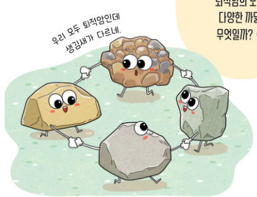
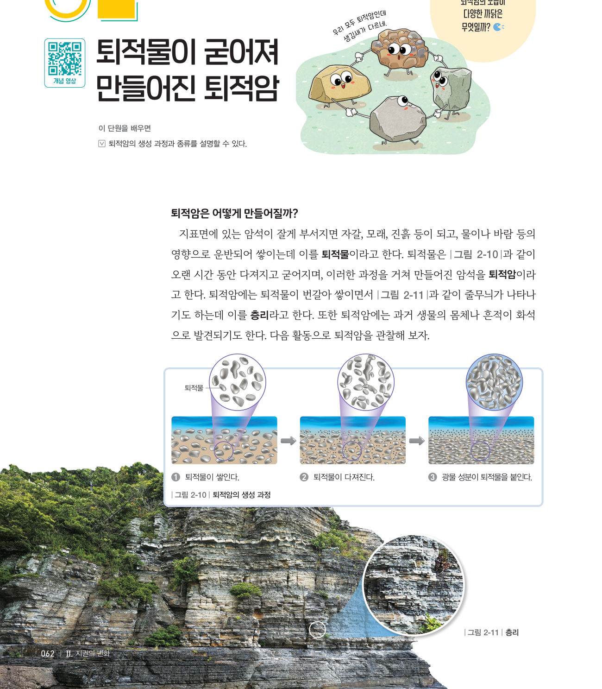
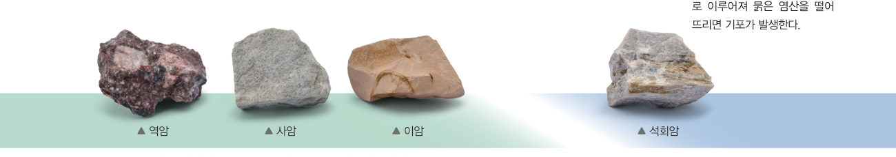
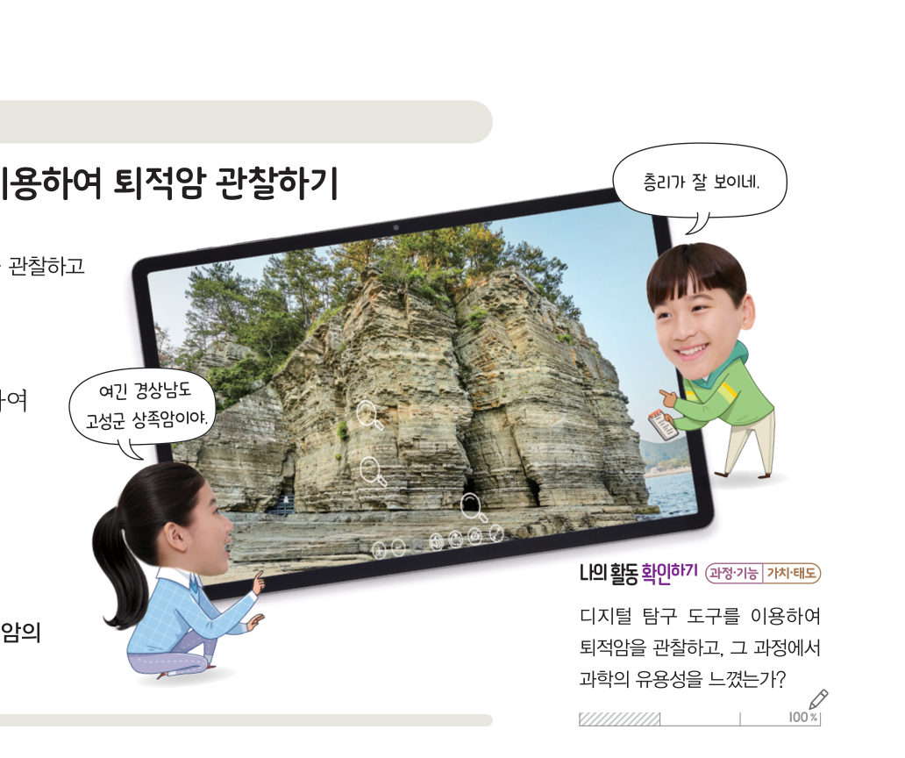

살아있는 교과서 · Ⅱ. 지권의 변화 · 2. 암석의 종류와 순환 · 02 62~63쪽
퇴적물이 굳어져 만들어진
퇴적물이 굳어져 만들어진
퇴적암
“우리 모두 퇴적암인데 생김새가 다르네.” 퇴적암의 모습이 다양한 까닭은 무엇일까? 가상 수조에 자갈·모래·진흙을 번갈아 쌓고 다지고 굳혀 층리를 만들고, 돋보기로 퇴적암을 구별해 보자.
🎯 이 단원을 배우면 — 퇴적암의 생성 과정과 종류를 설명할 수 있다.
교과서퇴적암은 어떻게 만들어질까? 62쪽
지표면에 있는 암석이 잘게 부서지면 자갈, 모래, 진흙 등이 되고, 물이나 바람 등의 영향으로 운반되어 쌓이는데 이를 퇴적물이라고 한다. 퇴적물은 그림 2-10과 같이 오랜 시간 동안 다져지고 굳어지며, 이러한 과정을 거쳐 만들어진 암석을 퇴적암이라고 한다. 퇴적암에는 퇴적물이 번갈아 쌓이면서 그림 2-11과 같이 줄무늬가 나타나기도 하는데 이를 층리라고 한다. 또한 퇴적암에는 과거 생물의 몸체나 흔적이 화석으로 발견되기도 한다.

가상 실험퇴적암 만들기 — 쌓이고, 다져지고, 굳어지고
강물이 실어 온 퇴적물을 골라 바다(수조) 바닥에 번갈아 쌓아 보자. 생물을 함께 묻어도 좋아요. 4층 이상 쌓은 뒤 [다지기] → [굳히기]를 차례로 눌러 보자.
퇴적물을 골라 쌓아 보세요.
1퇴적암이 만들어지는 과정을 순서대로 놓으시오.
- 광물 성분이 퇴적물을 붙인다.
- 퇴적물이 쌓인다.
- 퇴적물이 다져진다.
퇴적물이 번갈아 쌓이면서 나타나는 줄무늬를 라고 한다.
교과서퇴적암에는 어떤 종류가 있을까? 63쪽
그림 2-12와 같이 퇴적암은 퇴적물의 크기와 종류에 따라 구분한다. 퇴적물은 크기에 따라 자갈, 모래, 진흙 등으로 구분한다. 자갈, 모래 등이 쌓이고 굳어진 암석을 역암이라고 하고, 주로 모래가 쌓이고 굳어진 암석을 사암이라고 하며, 주로 진흙이 쌓이고 굳어진 암석을 이암이라고 한다. 바닷물에 녹아 있던 석회질 물질이나 조개껍데기 등 생물의 유해가 쌓이고 굳어진 암석은 ●석회암이라고 한다.
●석회암의 특징 석회질 물질로 이루어져 묽은 염산을 떨어뜨리면 기포가 발생한다.

돋보기 관찰퇴적암 (가)~(라) 구별하기
각 표본을 누르면 돋보기로 확대해 보고, [염산]을 누르면 묽은 염산을 떨어뜨려요. 알갱이 크기와 염산 반응으로 암석을 구별해 보자.
| ⑥ 자갈, 모래 등이 쌓이고 굳어진 역암 | |
| ⑦ 주로 모래가 쌓이고 굳어진 사암 | |
| ⑧ 주로 진흙이 쌓이고 굳어진 이암 | |
| ⑨ 석회질 물질이 쌓이고 굳어져 염산에 반응하는 암석 |
⑩ (가), (다), (라)를 퇴적물의 크기가 작은 것부터 순서대로 놓으시오.
- (다)
- (가)
- (라)
해 보기 · 자료 수집하기스마트 기기를 이용하여 퇴적암 관찰하기 63쪽

퇴적암을 관찰할 수 있는 자료(검색어: 상족암 VR, 채석강 VR 등)를 검색하여 퇴적암의 모습과 특징을 관찰한다.
💬관찰한 장소와 그 장소에서 볼 수 있는 퇴적암의 특징을 이야기해 보자.
🧩 두 번째 블록 · 힌트 조각 1 (63쪽)
국가지질공원에 있는 퇴적암에서는 퇴적물이 번갈아 쌓이면서 나타난 줄무늬인 ( )이/가 관찰되기도 한다.
스스로 확인하기62쪽 학습 목표를 달성했는지 확인해 보자 63쪽
1개념 확인 퇴적물이 오랜 시간 동안 다져지고 굳어져 만들어진 암석을 ( )(이)라고 한다.
2사고력 퇴적암에서 화석이 발견되는 까닭을 퇴적암의 생성 과정과 관련지어 설명해 보자.
5분 테스트퇴적물이 굳어져 만들어진 퇴적암
1① 지표면에 있는 암석이 잘게 부서져 물이나 바람 등의 영향으로 운반되어 쌓이는 것을 이라고 한다.
| ③ 퇴적물이 번갈아 쌓이면서 나타나는 줄무늬를 엽리라고 한다. | |
| ④ 퇴적암에는 화석이 발견되기도 한다. | |
| ⑤ 퇴적암은 퇴적물의 크기와 종류에 따라 구분할 수 있다. |
스스로 정리하기퇴적암
2퇴적암
⑴ 퇴적암: 퇴적물이 쌓이고 → 다져지고 → 굳어져 만들어진 암석 — 층리, 화석이 나타나기도 한다.
⑵ 종류: 자갈 → , 모래 → , 진흙 → , 석회질 물질·생물의 유해 →
⑵ 종류: 자갈 → , 모래 → , 진흙 → , 석회질 물질·생물의 유해 →
| 평가 기준 | 스스로 평가 |
|---|---|
| 지식·이해 퇴적암의 생성 과정과 종류를 설명할 수 있는가? | |
| 가치·태도 디지털 탐구 도구를 이용하여 퇴적암을 관찰하고, 과학의 유용성을 느꼈는가? |
제출학생 정보 · 제출하기
모든 활동을 마친 뒤 제출하면 전체가 한 번에 채점되고 피드백이 나타나요. 답안은 선생님 스프레드시트(중2 탭)에 기록돼요.